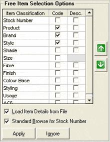

The Free Item Selection Options grid is displayed.

Item Classification: The item classifications that are enabled in the system parameters are displayed in the grid.
Code: Select to display the code of the corresponding item classification attribute, in the Free Items grid for item selection.
Desc.: Select to display the description of the corresponding item classification attribute, in the Free Items grid for item selection.
You can select Code or Desc. or both of the item classification columns (attributes) required for item selection.
You can rearrange the order in which the columns are to be present in the Free Items grid by using and .
Load Item Details from File: Select to activate the Load option in the Offer Details section that enables loading of item details from a CSV file.
Standard Browse for Stock Number: Select to activate the standard F2 browse for item search for selecting the required stock numbers.